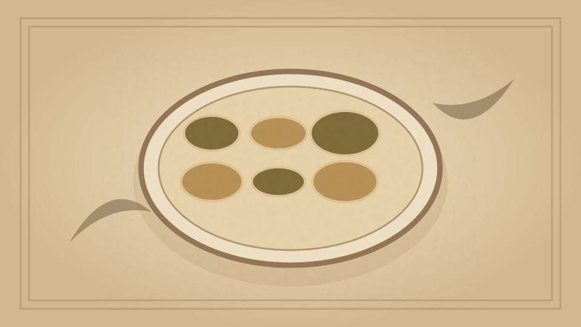

1910 · Fannie Merritt Farmer · EGGS
Eggs à la Parisienne
The Boston Cooking-School Cook Book

Historical Recipe
The following text is extracted from the 1910 edition, retaining historical terminology and quantities.
Original Ingredients & Directions
Butter small timbale moulds, sprinkle with finely chopped truffles, parsley, and cooked beets. Break eggs, and slip one into each mould, sprinkle with salt and pepper, set in pan of hot water, and cook until egg is firm. Remove from moulds on octagon slices of toast, and pour around Tomato Sauce II (see p. 270 ).
Planked Eggs. — Page 100 .
Plain Omelet. — Page 105 .
Utensils and Materials for the starting of Brown Soup Stock. — Page 113 .
105 Eggs Mornay
Automatically extracted transcription; editorial verification pending. Historical instructions may not meet modern food-safety standards.